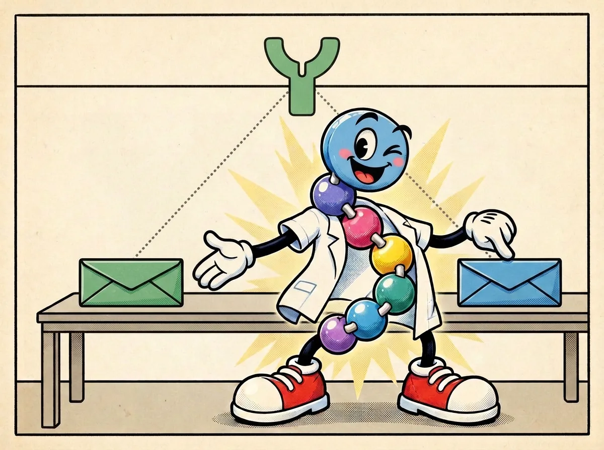
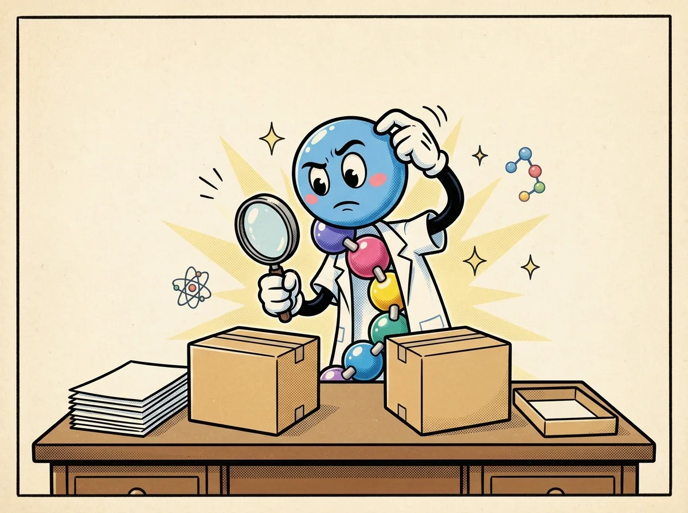

Hormone ≠ medicine
Distinguish the body's GLP-1 hormone from a manufactured GLP-1 receptor-agonist medicine, and recognize approval status as a separate product-level question.


What the comic means
The clean version
Your body makes GLP-1 as a short-lived signal. A GLP-1 receptor agonist is a manufactured medicine designed to act at the GLP-1 receptor. Sharing a receptor does not make them the same molecule or the same experience in the body. Whether a particular drug product was reviewed and approved is a separate question. [1][2]
One level deeper
Endogenous GLP-1 is made by intestinal cells and cleared rapidly. GLP-1 receptor agonists are designed ligands that act at the same receptor, with chemistry and exposure that differ from the native hormone. Receptor target, molecular identity and regulatory status are three different axes. FDA-approved drug products undergo review for their specified uses; compounded drugs are not FDA-approved and are not reviewed by FDA for safety, effectiveness or quality before marketing. This is a description of categories, not advice about any product. [1][2][3]
Mechanism lens
Mechanism entry point: a ligand's interaction with GLP-1R does not define its entire pharmacology. Molecular structure, stability and exposure affect what the receptor encounters over time. A claim that two products act at the same receptor is not evidence of identical formulation, tested indication or regulatory review. This page deliberately provides no dosing, comparisons, efficacy statistics, adverse-event rankings or prescribing guidance; those require separate qualified clinical review. [1][2][3]
Beads aren't biology.
A mailbox is passive, but receptors signal within cells. A reinforced envelope is not automatically better, and the art does not encode half-life or potency. Blank papers are not a real FDA review record; approval applies to a specific product and use. This lesson gives no recommendation about any medicine or person.
Check your understanding
If two substances can act at the same receptor, have we learned that they are the same molecule and equally reviewed products?
Reveal answer
No. Sharing a receptor target does not settle molecular identity, exposure or whether a specific product was reviewed and approved. These are separate questions.
Check the science
- NIDDK — How GLP-1 research led to medicines — Distinction between native hormone and engineered longer-lived medicines
- FDA — Concerns with unapproved GLP-1 drugs — Unapproved products do not receive FDA premarket review
- FDA — Compounding and the FDA: Questions and Answers — Compounded drugs are not FDA-approved
Sources support the biology; comic poses and colored beads are illustrative. Educational content is not medical advice.